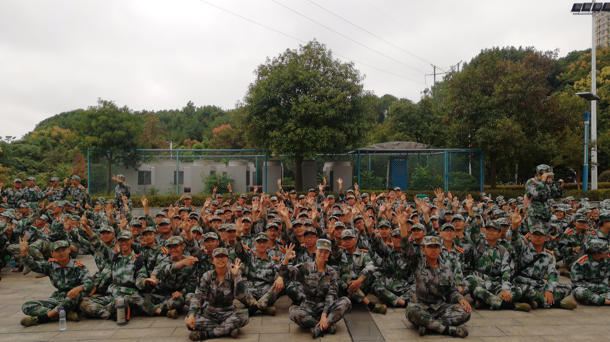

我的大学军训

军训期间开展的一系列活动，使我们加强了集体荣誉感和组织凝聚力，让我们体验到良好的团队合作精神和灵活应变技巧在我们今后实际工作中的重要性;立定、稍息、原地转向、齐步走、跑步走和正步走等训练项目，让我们体会到了在建设新世纪的社会主义现代化事业中必须具备艰苦奋斗、吃苦耐劳的优良传统。严格的管理、严谨的训练也增加了我们的自我约束力和时间观念。
军训是酸的。每天我们连续训练两个多小时，昂首，挺胸，这些是最基本的要求。不用一天的时间，脖子、肩膀、手腕、腿都酸了。一声声哨响，一阵阵踏步声，一句句口令声，奏出了属于军人的气质，奏出了军人的灵魂，更奏出了迷彩的本色，一顶顶帽子，一条条腰带，一套套军装，穿出了军人的生活，穿出了军人的习惯，更穿出了迷彩的本色。